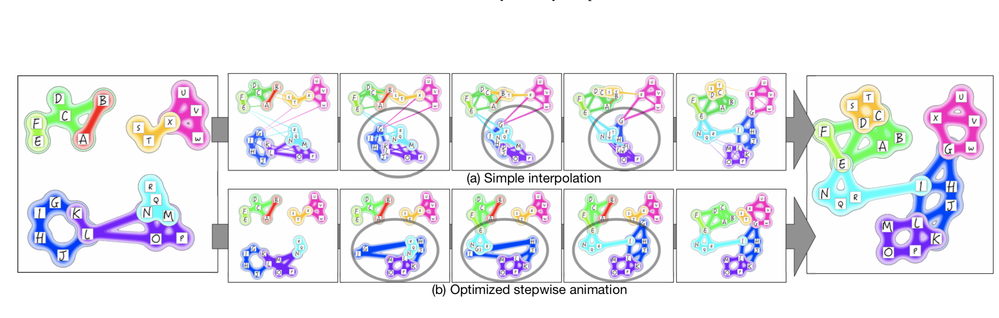
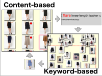
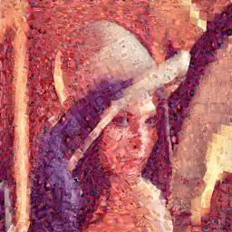

水野 加寿代（小島 加寿代) 
博士(情報理工学)mail:kazuyokojima[at]gmail.com
経歴
- 2017年3月 東京大学 大学院情報理工学系研究科 コンピュータ科学専攻 博士課程 修了
- 2007年3月 東京大学 大学院情報理工学系研究科 コンピュータ科学専攻 修士課程 修了
- 2005年3月 東京大学 工学部 計数工学科 卒業
職歴
- 2017年4月-現在 ヤフー株式会社
- 2009年6月-2014年3月 株式会社スクウェア・エニックス
- 2007年4月-2009年4月 日本SGI株式会社
プロジェクト
|  |
Optimizing Stepwise Animation in Dynamic Set Diagrams |
|  |
AssisTag: Seamless Integration of Content- and Keyword-based Image Exploration |
 |
Category-Aware Image Exploration |
|  |
視覚特性を考慮した装飾的フォトモザイク |
{kind=link}
研究業績
国際論文誌論文(査読付き)
- Kazuyo Mizuno, Hsiang-Yun Wu, Shigeo Takahashi, and Takeo Igarashi. Optimizing Stepwise Animation in Dynamic Set Diagrams, Computer Graphics Forum (Proceedings of EuroVis 2019), Vol. 38, No. 3, pp. 13-24, 2019.Best Paper Honorable Mention Award
- Kazuyo Mizuno, Daisuke Sakamoto, Takeo Igarashi: "AssisTag: Seamless Integration of Content-based and Keyword-based Image Exploration for Category Search," Journal of Imaging Science & Technology, 60(6):60401–1–60401–12, 2016.
国際会議論文(査読付き)
- Kazuyo Mizuno, Daisuke Sakamoto, Takeo Igarashi: "AssisTag: Seamless Integration of Content-based and Keyword-based Image Exploration for Category Search," In Proceedings of IS&T/SPIE Conference on Visualization and Data Analysis (VDA ’17), pages 58–69, 2017.
- Gao Yi, Hsiang-Yun Wu, Kazuo Misue, Kazuyo Mizuno, and Shigeo Takahashi: "Visualizing Bag-of-Features Image Categorization Using Anchored Maps," in Proc. of the 7th International Symposium on Visual Information Communication and Interaction (VINCI 2014), pp. 39-48, 2014.
- Kazuyo Mizuno, Hsiang-Yun Wu, Shigeo Takahashi: "Manipulating Bilevel Feature Space for Category-Aware Image Exploration," in Proc. of the 7th IEEE Pacific Visualization Symposium (PacificVis2014), (at Yokohama, Japan), pp. 217-224, March, 2014.
国際会議論文 ポスター(査読付き)
- Yi Gao, Hsiang-Yun Wu, Kazuyo Mizuno, Kazuo Misue, Shigeo Takahashi: "Visualizing Bag-of-Features Image Cateogrization using Anchored Maps," In Proc. of the 7th IEEE Pacific Visualization Symposium (PacificVis2014),(at Yokohama, Japan), pp. ??-??, March, 2014.
- Kazuyo Kojima, Shigeo Takahashi, Tomoyuki Nishita: "Creating Quadrilateral Mosaics from Image Topographic Features," in Proc. of the 3rd symposium on Applied perception in graphics and visualization (APGV'06), (at Boston, MA, USA), ACM Press, p. 144, July, 2006.
国内論文誌論文
- 小島 加寿代, 高橋 成雄, 岡田 真人: 「視覚特性を考慮した装飾的フォトモザイク」, 情報処理学会, Vol. 49, No.7, pp. 2703 - 2711, 2008．
国内会議論文（査読付き）
- 水野 加寿代, 坂本 大介, 五十嵐 健夫:「AssisTag: 画像内容に基づく閲覧と単語に基づく閲覧を統合した画像探索システム」第24回インタラクティブシステムとソフトウェアに関するワークショップ (WISS ’16), pp. 127–132, 2016.
- 小島 加寿代, 高橋 成雄, 岡田 真人: 「視覚特性を考慮したフォトモザイク」 Visual Computing/グラフィクスとCAD合同シンポジウム 2007, pp. 69-74, June, 2007. VC賞(オーラルの部)受賞 GCAD賞受賞 山下記念賞受賞
- 小島 加寿代, 高橋 成雄, 西田 友是: 「グラデーションを考慮にいれた四辺形ベース画像モザイク化」 Visual Computing/グラフィクスとCAD合同シンポジウム 2006, pp. 189-194, June, 2006. VCポスター賞受賞
国内会議論文（査読なし）
- 小島 加寿代, 高橋 成雄, 西田 友是: 「画像特徴に沿った四辺形ベース画像モザイク化」 情報処理学会 第68回全国大会 学生セッション 1U-10
その他
- 第１回 若手異分野交流研究会 (招待講演)[Web], 2017.2
- UIST 2016 The University of Tokyo Open Lab (ポスター・デモ展示)[Web][Poster], 2016.10
- 東京大学新聞に「お土産×東大の研究」として記事掲載 2010.5
- 東京大学コミュニケーションセンターより、研究成果画像を用いたマウスパッド販売 2007.8
- 著作物,「視覚特性を考慮に入れたフォトモザイク生成（プログラムとそれにより生成されるフォトモザイク画を含む）」 2007.3
- ビジュアル情報処理研究会 学生研究合宿 (ポスター, 口頭発表), 2006.9
- ビジュアル情報処理研究会学生の会 合同合宿 (ポスター発表), 2005.9
学位論文
- Kazuyo Mizuno: "Manipulation, Visualization, Interaction for Adaptive Category-Aware Image Exploration", Ph.D. Thesis, The University of Tokyo, 2017.3
Supervised by Prof. Takeo Igarashi and Prof. Shigeo Takahashi - Kazuyo Kojima: "A Feature-Based Approach to Quadrilateral Image Mosaics Respecting Human Visual Perception and its Application", Master's Thesis, The University of Tokyo, 2007.3
Supervised by Prof. Shigeo Takahashi
特許
- 五十嵐 健夫, 坂本 大介, 水野 加寿代. 情報処理装置、情報処理方法、及びプログラム 特願2016-225102、2016年11月出願
研究費助成
- 日本学術振興会 特別研究員(DC2), "探索空間モデルの編集に基づく対話的可視化処理を介した画像検索手法の研究", 2015.4-2017.3
受賞
- Best Paper Honorable Mention Award at EuroVis 2019 (June 2019)
- 情報処理学会 山下記念研究賞 (Jun 2007)
- 情報処理学会 グラフィクスとCAD研究会 優秀研究発表賞 (Jun 2007)
- 画像電子学会 ビジュアルコンピューティング研究賞 (Jun 2007)
- 画像電子学会 ビジュアルコンピューティング研究賞(ポスター) (Jun 2006)